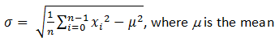
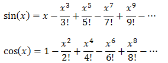
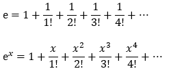
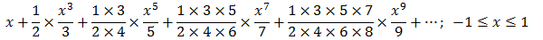

You need to do these exercises by yourself. Please don't ask me for solutions!
Getting Started Exercises
HelloWorld
- Install JDK on your machine. Follow the instructions in "How to Install JDK".
- Write a Hello-world program using JDK and a source-code editor, such as:
- For All Platforms: Sublime Text, Atom
- For Windows: TextPad, NotePad++
- For macOS: jEdit, gedit
- For Ubuntu: gedit
- Read "Introduction to Java Programming for Novices & First-Time Programmers". Do ALL the exercises.
CheckPassFail (if-else)
Write a program called CheckPassFail which prints "PASS" if the int variable "mark" is more than or equal to 50; or prints "FAIL" otherwise. The program shall always print “DONE” before exiting.
Hints
Use >= for greater than or equal to comparison.
/** * Trying if-else statement. */ public class CheckPassFail { // Save as "CheckPassFail.java" public static void main(String[] args) { // Program entry point int mark = 49; // Set the value of "mark" here! System.out.println("The mark is " + mark); // if-else statement if ( ...... ) { System.out.println( ...... ); } else { System.out.println( ...... ); } System.out.println( ...... ); } }
Try mark = 0, 49, 50, 51, 100 and verify your results.
Take note of the source-code indentation!!! Whenever you open a block with '{', indent all the statements inside the block by 3 (or 4 spaces). When the block ends, un-indent the closing '}' to align with the opening statement.
CheckOddEven (if-else)
Write a program called CheckOddEven which prints "Odd Number" if the int variable “number” is odd, or “Even Number” otherwise. The program shall always print “bye!” before exiting.
Hints
n is an even number if (n % 2) is 0; otherwise, it is an odd number. Use == for comparison, e.g., (n % 2) == 0.
/** * Trying if-else statement and modulus (%) operator. */ public class CheckOddEven { // Save as "CheckOddEven.java" public static void main(String[] args) { // Program entry point int number = 49; // Set the value of "number" here! System.out.println("The number is " + number); if ( ...... ) { System.out.println( ...... ); // even number } else { System.out.println( ...... ); // odd number } System.out.println( ...... ); } }
Try number = 0, 1, 88, 99, -1, -2 and verify your results.
Again, take note of the source-code indentation! Make it a good habit to ident your code properly, for ease of reading your program.
PrintNumberInWord (nested-if, switch-case)
Write a program called PrintNumberInWord which prints "ONE", "TWO",... , "NINE", "OTHER" if the int variable "number" is 1, 2,... , 9, or other, respectively. Use (a) a "nested-if" statement; (b) a "switch-case-default" statement.
Hints
/** * Trying nested-if and switch-case statements. */ public class PrintNumberInWord { // Save as "PrintNumberInWord.java" public static void main(String[] args) { int number = 5; // Set the value of "number" here! // Using nested-if if (number == 1) { // Use == for comparison System.out.println( ...... ); } else if ( ...... ) { ...... } else if ( ...... ) { ...... ...... ...... } else { ...... } // Using switch-case-default switch(number) { case 1: System.out.println( ...... ); break; // Don't forget the "break" after each case! case 2: System.out.println( ...... ); break; ...... ...... default: System.out.println( ...... ); } } }Try
number = 0, 1, 2, 3, ..., 9, 10 and verify your results.
PrintDayInWord (nested-if, switch-case)
Write a program called PrintDayInWord which prints “Sunday”, “Monday”, ... “Saturday” if the int variable "dayNumber" is 0, 1, ..., 6, respectively. Otherwise, it shall print "Not a valid day". Use (a) a "nested-if" statement; (b) a "switch-case-default" statement.
Try dayNumber = 0, 1, 2, 3, 4, 5, 6, 7 and verify your results.
Exercises on Number Systems (for Science/Engineering Students)
To be proficient in programming, you need to be able to operate on these number systems:
- Decimal (used by human beings for input and output)
- Binary (used by computer for storage and processing)
- Hexadecimal (shorthand or compact form for binary)
Read "Number Systems" section of "Data Representation", and complete the exercises.
Writing Good Programs
The only way to learn programming is program, program and program. Learning programming is like learning cycling, swimming or any other sports. You can't learn by watching or reading books. Start to program immediately. On the other hands, to improve your programming, you need to read many books and study how the masters program.
It is easy to write programs that work. It is much harder to write programs that not only work but also easy to maintain and understood by others – I call these good programs. In the real world, writing program is not meaningful. You have to write good programs, so that others can understand and maintain your programs.
Pay particular attention to:
- Coding Style:
- Read "Java Code Convention" (@ https://www.oracle.com/technetwork/java/codeconventions-150003.pdf or google "Java Code Convention").
- Follow the Java Naming Conventions for variables, methods, and classes STRICTLY. Use CamelCase for names. Variable and method names begin with lowercase, while class names begin with uppercase. Use nouns for variables (e.g.,
radius) and class names (e.g.,Circle). Use verbs for methods (e.g.,getArea(),isEmpty()). - Use Meaningful Names: Do not use names like
a,b,c,d,x,x1,x2, andx1688- they are meaningless. Avoid single-alphabet names likei,j,k. They are easy to type, but usually meaningless. Use single-alphabet names only when their meaning is clear, e.g.,x,y,zfor co-ordinates andifor array index. Use meaningful names likerowandcol(instead ofxandy,iandj,x1andx2),numStudents(notn),maxGrade,size(notn), andupperbound(notnagain). Differentiate between singular and plural nouns (e.g., usebooksfor an array of books, andbookfor each item). - Use consistent indentation and coding style. Many IDEs (such as Eclipse/NetBeans) can re-format your source codes with a single click.
- Program Documentation: Comment! Comment! and more Comment to explain your code to other people and to yourself three days later.
Exercises on Decision and Loop
SumAverageRunningInt (Decision & Loop)
Write a program called SumAverageRunningInt to produce the sum of 1, 2, 3, ..., to 100. Store 1 and 100 in variables lowerbound and upperbound, so that we can change their values easily. Also compute and display the average. The output shall look like:
The sum of 1 to 100 is 5050 The average is 50.5
Hints
/** * Compute the sum and average of running integers from a lowerbound to an upperbound using loop. */ public class SumAverageRunningInt { // Save as "SumAverageRunningInt.java" public static void main (String[] args) { // Define variables int sum = 0; // The accumulated sum, init to 0 double average; // average in double final int LOWERBOUND = 1; final int UPPERBOUND = 100; // Use a for-loop to sum from lowerbound to upperbound for (int number = LOWERBOUND; number <= UPPERBOUND; ++number) { // The loop index variable number = 1, 2, 3, ..., 99, 100 sum += number; // same as "sum = sum + number" } // Compute average in double. Beware that int / int produces int! ...... // Print sum and average ...... } }
Try
- Modify the program to use a "while-do" loop instead of "for" loop.
int sum = 0; int number = LOWERBOUND; // declare and init loop index variable while (number <= UPPERBOUND) { // test sum += number; ++number; // update } - Modify the program to use a "do-while" loop.
int sum = 0; int number = LOWERBOUND; // declare and init loop index variable do { sum += number; ++number; // update } while (number <= UPPERBOUND); // test - What is the difference between "for" and "while-do" loops? What is the difference between "while-do" and "do-while" loops?
- Modify the program to sum from
111to8899, and compute the average. Introduce anintvariable calledcountto count the numbers in the specified range (to be used in computing the average).int count = 0; // Count the number within the range, init to 0 for ( ...; ...; ... ) { ...... ++count; } - Modify the program to find the "sum of the squares" of all the numbers from
1to100, i.e.1*1 + 2*2 + 3*3 + ... + 100*100. - Modify the program to produce two sums: sum of odd numbers and sum of even numbers from
1to100. Also computer their absolute difference.
HINTS:// Define variables int sumOdd = 0; // Accumulating sum of odd numbers int sumEven = 0; // Accumulating sum of even numbers int absDiff; // Absolute difference between the two sums ...... // Compute sums for (int number = ...; ...; ...) { if (......) { sumOdd += number; } else { sumEven += number; } } // Compute Absolute Difference if (sumOdd > sumEven) { absDiff = ......; } else { absDiff = ......; } // OR use one liner conditional expression absDiff = (sumOdd > sumEven) ? ...... : ......;
Product1ToN (or Factorial) (Decision & Loop)
Write a program called Product1ToN to compute the product of integers from 1 to 10 (i.e., 1×2×3×...×10), as an int. Take note that It is the same as factorial of N.
Hints
Declare an int variable called product, initialize to 1, to accumulate the product.
// Define variables int product = 1; // The accumulated product, init to 1 final int LOWERBOUND = 1; final int UPPERBOUND = 10;
Try
- Compute the product from
1to11,1to12,1to13and1to14. Write down the product obtained and decide if the results are correct.
HINTS: Factorial of13(=6227020800) is outside the range ofint[-2147483648, 2147483647]. Take note that computer programs may not produce the correct result even though the code seems correct! - Repeat the above, but use
longto store theproduct. Compare the products obtained withintforN=13andN=14.
HINTS: Withlong, you can store factorial of up to20.
HarmonicSum (Decision & Loop)
Write a program called HarmonicSum to compute the sum of a harmonic series, as shown below, where n=50000. The program shall compute the sum from left-to-right as well as from the right-to-left. Are the two sums the same? Obtain the absolute difference between these two sums and explain the difference. Which sum is more accurate?
Hints
/** * Compute the sum of harmonics series from left-to-right and right-to-left. */ public class HarmonicSum { // Save as "HarmonicSum.java" public static void main (String[] args) { // Define variables final int MAX_DENOMINATOR = 50000; // Use a more meaningful name instead of n double sumL2R = 0.0; // Sum from left-to-right double sumR2L = 0.0; // Sum from right-to-left double absDiff; // Absolute difference between the two sums // for-loop for summing from left-to-right for (int denominator = 1; denominator <= MAX_DENOMINATOR; ++denominator) { // denominator = 1, 2, 3, 4, 5, ..., MAX_DENOMINATOR ...... // Beware that int/int gives int, e.g., 1/2 gives 0. } System.out.println("The sum from left-to-right is: " + sumL2R); // for-loop for summing from right-to-left ...... // Find the absolute difference and display if (sumL2R > sumR2L) ...... else ...... } }
ComputePI (Decision & Loop)
Write a program called ComputePI to compute the value of π, using the following series expansion. Use the maximum denominator (MAX_DENOMINATOR) as the terminating condition. Try MAX_DENOMINATOR of 1000, 10000, 100000, 1000000 and compare the PI obtained. Is this series suitable for computing PI? Why?
Hints
Add to sum if the denominator % 4 is 1, and subtract from sum if it is 3.
double sum = 0.0;
final int MAX_DENOMINATOR = 1000; // Try 10000, 100000, 1000000
for (int denominator = 1; denominator <= MAX_DENOMINATOR; denominator += 2) {
// denominator = 1, 3, 5, 7, ..., MAX_DENOMINATOR
if (denominator % 4 == 1) {
sum += ......;
} else if (denominator % 4 == 3) {
sum -= ......;
} else { // remainder of 0 or 2
System.out.println("Impossible!!!");
}
}
......
Try
- Instead of using maximum denominator as the terminating condition, rewrite your program to use the maximum number of terms (
MAX_TERM) as the terminating condition.final int MAX_TERM = 10000; // number of terms used in computation double sum = 0.0; for (int term = 1; term <= MAX_TERM; term++) { // term = 1, 2, 3, ..., MAX_TERM // term = 1, 2, 3, 4, ..., MAX_TERM if (term % 2 == 1) { // odd term number: add sum += 1.0 / (term * 2 - 1); } else { // even term number: subtract ...... } } - JDK maintains the value of π in a built-in
doubleconstant calledMath.PI(=3.141592653589793). Add a statement to compare the values obtained and theMath.PI, in percents ofMath.PI, i.e.,(piComputed / Math.PI) * 100.
CozaLozaWoza (Decision & Loop)
Write a program called CozaLozaWoza which prints the numbers 1 to 110, 11 numbers per line. The program shall print "Coza" in place of the numbers which are multiples of 3, "Loza" for multiples of 5, "Woza" for multiples of 7, "CozaLoza" for multiples of 3 and 5, and so on. The output shall look like:
1 2 Coza 4 Loza Coza Woza 8 Coza Loza 11 Coza 13 Woza CozaLoza 16 17 Coza 19 Loza CozaWoza 22 23 Coza Loza 26 Coza Woza 29 CozaLoza 31 32 Coza ......
Hints
public class CozaLozaWoza { // Save as "CozaLozaWoza.java"
public static void main(String[] args) {
final int LOWERBOUND = 1, UPPERBOUND = 110;
for (int number = LOWERBOUND; number <= UPPERBOUND; ++number) {
// number = LOWERBOUND+1, LOWERBOUND+2, ..., UPPERBOUND
// Print "Coza" if number is divisible by 3
if ( ...... ) {
System.out.print("Coza");
}
// Print "Loza" if number is divisible by 5
if ( ...... ) {
System.out.print(.....);
}
// Print "Woza" if number is divisible by 7
......
// Print the number if it is not divisible by 3, 5 and 7 (i.e., it has not been processed above)
if ( ...... ) {
......
}
// After processing the number, print a newline if number is divisible by 11;
// else print a space
if ( ...... ) {
System.out.println(); // print newline
} else {
System.out.print( ...... ); // print a space
}
}
}
}
Notes
- You cannot use nested-if (if ... else if ... else if ... else) for this problem. It is because the tests are not mutually exclusive. For example,
15is divisible by both3and5. Nested-if is only applicable if the tests are mutually exclusive. - The tests above looks messy. A better solution is to use a
booleanflag to keep track of whether the number has been processed, as follows:final int LOWERBOUND = 1, UPPERBOUND = 110; boolean printed; for (int number = LOWERBOUND; number <= UPPERBOUND; ++number) { printed = false; // init before processing each number // Print "Coza" if number is divisible by 3 if ( ...... ) { System.out.print( ...... ); printed = true; // processed! } // Print "Loza" if number is divisible by 5 if ( ...... ) { System.out.print( ..... ); printed = true; // processed! } // Print "Woza" if number is divisible by 7 ...... // Print the number if it has not been processed if (!printed) { ...... } // After processing the number, print a newline if it is divisible by 11; // else, print a space ...... }
Fibonacci (Decision & Loop)
Write a program called Fibonacci to print the first 20 Fibonacci numbers F(n), where F(n)=F(n–1)+F(n–2) and F(1)=F(2)=1. Also compute their average. The output shall look like:
The first 20 Fibonacci numbers are: 1 1 2 3 5 8 13 21 34 55 89 144 233 377 610 987 1597 2584 4181 6765 The average is 885.5
Hints
/** * Print first 20 Fibonacci numbers and their average */ public class Fibonacci { public static void main (String[] args) { int n = 3; // The index n for F(n), starting from n=3, as n=1 and n=2 are pre-defined int fn; // F(n) to be computed int fnMinus1 = 1; // F(n-1), init to F(2) int fnMinus2 = 1; // F(n-2), init to F(1) int nMax = 20; // maximum n, inclusive int sum = fnMinus1 + fnMinus2; // Need sum to compute average double average; System.out.println("The first " + nMax + " Fibonacci numbers are:"); ...... while (n <= nMax) { // n starts from 3 // n = 3, 4, 5, ..., nMax // Compute F(n), print it and add to sum ...... // Increment the index n and shift the numbers for the next iteration ++n; fnMinus2 = fnMinus1; fnMinus1 = fn; } // Compute and display the average (=sum/nMax). // Beware that int/int gives int. ...... } }
Try
- Tribonacci numbers are a sequence of numbers
T(n)similar to Fibonacci numbers, except that a number is formed by adding the three previous numbers, i.e.,T(n)=T(n-1)+T(n-2)+T(n-3),T(1)=T(2)=1, andT(3)=2. Write a program calledTribonaccito produce the first twenty Tribonacci numbers.
ExtractDigits (Decision & Loop)
Write a program called ExtractDigits to extract each digit from an int, in the reverse order. For example, if the int is 15423, the output shall be "3 2 4 5 1", with a space separating the digits.
Hints
The coding pattern for extracting individual digits from an integer n is:
- Use
(n % 10)to extract the last (least-significant) digit. - Use
n = n / 10to drop the last (least-significant) digit. - Repeat if
(n > 0), i.e., more digits to extract.
Take note that n is destroyed in the process. You may need to clone a copy.
int n = ...;
while (n > 0) {
int digit = n % 10; // Extract the least-significant digit
// Print this digit
......
n = n / 10; // Drop the least-significant digit and repeat the loop
}
Exercises on Input, Decision and Loop
Add2Integer (Input)
Write a program called Add2Integers that prompts user to enter two integers. The program shall read the two integers as int; compute their sum; and print the result. For example,
Enter first integer: 8 Enter second integer: 9 The sum is: 17
Hints
import java.util.Scanner; // For keyboard input /** * 1. Prompt user for 2 integers * 2. Read inputs as "int" * 3. Compute their sum in "int" * 4. Print the result */ public class Add2Integers { // Save as "Add2Integers.java" public static void main (String[] args) { // Declare variables int number1, number2, sum; // Put up prompting messages and read inputs as "int" Scanner in = new Scanner(System.in); // Scan the keyboard for input System.out.print("Enter first integer: "); // No newline for prompting message number1 = in.nextInt(); // Read next input as "int" ...... in.close(); // Close Scanner // Compute sum sum = ...... // Display result System.out.println("The sum is: " + sum); // Print with newline } }
SumProductMinMax3 (Arithmetic & Min/Max)
Write a program called SumProductMinMax3 that prompts user for three integers. The program shall read the inputs as int; compute the sum, product, minimum and maximum of the three integers; and print the results. For examples,
Enter 1st integer: 8 Enter 2nd integer: 2 Enter 3rd integer: 9 The sum is: 19 The product is: 144 The min is: 2 The max is: 9
Hints
// Declare variables
int number1, number2, number3; // The 3 input integers
int sum, product, min, max; // To compute these
// Prompt and read inputs as "int"
Scanner in = new Scanner(System.in); // Scan the keyboard
......
......
in.close();
// Compute sum and product
sum = ......
product = ......
// Compute min
// The "coding pattern" for computing min is:
// 1. Set min to the first item
// 2. Compare current min with the second item and update min if second item is smaller
// 3. Repeat for the next item
min = number1; // Assume min is the 1st item
if (number2 < min) { // Check if the 2nd item is smaller than current min
min = number2; // Update min if so
}
if (number3 < min) { // Continue for the next item
min = number3;
}
// Compute max - similar to min
......
// Print results
......
Try
- Write a program called
SumProductMinMax5that prompts user for five integers. The program shall read the inputs asint; compute the sum, product, minimum and maximum of the five integers; and print the results. Use fiveintvariables:number1,number2, ...,number5to store the inputs.
CircleComputation (double & printf())
Write a program called CircleComputation that prompts user for the radius of a circle in floating point number. The program shall read the input as double; compute the diameter, circumference, and area of the circle in double; and print the values rounded to 2 decimal places. Use System-provided constant Math.PI for pi. The formulas are:
diameter = 2.0 * radius; area = Math.PI * radius * radius; circumference = 2.0 * Math.PI * radius;
Hints
// Declare variables
double radius, diameter, circumference, area; // inputs and results - all in double
......
// Prompt and read inputs as "double"
System.out.print("Enter the radius: ");
radius = in.nextDouble(); // read input as double
// Compute in "double"
......
// Print results using printf() with the following format specifiers:
// %.2f for a double with 2 decimal digits
// %n for a newline
System.out.printf("Diameter is: %.2f%n", diameter);
......
Try
- Write a program called
SphereComputationthat prompts user for theradiusof a sphere in floating point number. The program shall read the input asdouble; compute the volume and surface area of the sphere indouble; and print the values rounded to 2 decimal places. The formulas are:surfaceArea = 4 * Math.PI * radius * radius; volume = 4 /3 * Math.PI * radius * radius * radius; // But this does not work in programming?! Why?Take note that you cannot name the variablesurface areawith a space orsurface-areawith a dash. Java's naming convention issurfaceArea. Other languages recommendsurface_areawith an underscore. - Write a program called
CylinderComputationthat prompts user for the baseradiusandheightof a cylinder in floating point number. The program shall read the inputs asdouble; compute the base area, surface area, and volume of the cylinder; and print the values rounded to 2 decimal places. The formulas are:baseArea = Math.PI * radius * radius; surfaceArea = 2.0 * Math.PI * radius + 2.0 * baseArea; volume = baseArea * height;
Swap2Integers
Write a program called Swap2Integers that prompts user for two integers. The program shall read the inputs as int, save in two variables called number1 and number2; swap the contents of the two variables; and print the results. For examples,
Enter first integer: 9 Enter second integer: -9 After the swap, first integer is: -9, second integer is: 9
Hints
To swap the contents of two variables x and y, you need to introduce a temporary storage, say temp, and do: temp ⇐ x; x ⇐ y; y ⇐ temp.
IncomeTaxCalculator (Decision)
The progressive income tax rate is mandated as follows:
| Taxable Income | Rate (%) |
|---|---|
| First $20,000 | 0 |
| Next $20,000 | 10 |
| Next $20,000 | 20 |
| The remaining | 30 |
For example, suppose that the taxable income is $85000, the income tax payable is $20000*0% + $20000*10% + $20000*20% + $25000*30%.
Write a program called IncomeTaxCalculator that reads the taxable income (in int). The program shall calculate the income tax payable (in double); and print the result rounded to 2 decimal places. For examples,
Enter the taxable income: $41234 The income tax payable is: $2246.80 Enter the taxable income: $67891
The income tax payable is: $8367.30 Enter the taxable income: $85432 The income tax payable is: $13629.60 Enter the taxable income: $12345 The income tax payable is: $0.00
Hints
// Declare constants first (variables may use these constants)
// The keyword "final" marked these as constant (i.e., cannot be changed).
// Use uppercase words joined with underscore to name constants
final double TAX_RATE_ABOVE_20K = 0.1;
final double TAX_RATE_ABOVE_40K = 0.2;
final double TAX_RATE_ABOVE_60K = 0.3;
// Declare variables
int taxableIncome;
double taxPayable;
......
// Compute tax payable in "double" using a nested-if to handle 4 cases
if (taxableIncome <= 20000) { // [0, 20000]
taxPayable = ......;
} else if (taxableIncome <= 40000) { // [20001, 40000]
taxPayable = ......;
} else if (taxableIncome <= 60000) { // [40001, 60000]
taxPayable = ......;
} else { // [60001, ]
taxPayable = ......;
}
// Alternatively, you could use the following nested-if conditions
// but the above follows the table data
//if (taxableIncome > 60000) { // [60001, ]
// ......
//} else if (taxableIncome > 40000) { // [40001, 60000]
// ......
//} else if (taxableIncome > 20000) { // [20001, 40000]
// ......
//} else { // [0, 20000]
// ......
//}
// Print results rounded to 2 decimal places
System.out.printf("The income tax payable is: $%.2f%n", ...);
Try
Suppose that a 10% tax rebate is announced for the income tax payable, capped at $1,000, modify your program to handle the tax rebate. For example, suppose that the tax payable is $12,000, the rebate is $1,000, as 10% of $12,000 exceed the cap.
IncomeTaxCalculatorWithSentinel (Decision & Loop)
Based on the previous exercise, write a program called IncomeTaxCalculatorWithSentinel which shall repeat the calculation until user enter -1. For example,
Enter the taxable income (or -1 to end): $41000 The income tax payable is: $2200.00 Enter the taxable income (or -1 to end): $62000 The income tax payable is: $6600.00 Enter the taxable income (or -1 to end): $73123 The income tax payable is: $9936.90 Enter the taxable income (or -1 to end): $84328 The income tax payable is: $13298.40 Enter the taxable income: $-1 bye!
The -1 is known as the sentinel value. (Wiki: In programming, a sentinel value, also referred to as a flag value, trip value, rogue value, signal value, or dummy data, is a special value which uses its presence as a condition of termination.)
Hints
The coding pattern for handling input with sentinel value is as follows:
// Declare constants first
final int SENTINEL = -1; // Terminating value for input
......
// Declare variables
int taxableIncome;
double taxPayable;
......
// Read the first input to "seed" the while loop
System.out.print("Enter the taxable income (or -1 to end): $");
taxableIncome = in.nextInt();
while (taxableIncome != SENTINEL) {
// Compute tax payable
......
// Print result
......
// Read the next input
System.out.print("Enter the taxable income (or -1 to end): $");
taxableIncome = in.nextInt();
// Repeat the loop body, only if the input is not the SENTINEL value.
// Take note that you need to repeat these two statements inside/outside the loop!
}
System.out.println("bye!");
Take note that we repeat the input statements inside and outside the loop. Repeating statements is NOT a good programming practice. This is because it is easy to repeat (Ctrl-C/Ctrl-V), but hard to maintain and synchronize the repeated statements. In this case, we have no better choices!
PensionContributionCalculator (Decision)
Both the employer and the employee are mandated to contribute a certain percentage of the employee's salary towards the employee's pension fund. The rate is tabulated as follows:
| Employee's Age | Employee Rate (%) | Employer Rate (%) |
|---|---|---|
| 55 and below | 20 | 17 |
| above 55 to 60 | 13 | 13 |
| above 60 to 65 | 7.5 | 9 |
| above 65 | 5 | 7.5 |
However, the contribution is subjected to a salary ceiling of $6,000. In other words, if an employee earns $6，800, only $6，000 attracts employee's and employer's contributions, the remaining $800 does not.
Write a program called PensionContributionCalculator that reads the monthly salary and age (in int) of an employee. Your program shall calculate the employee's, employer's and total contributions (in double); and print the results rounded to 2 decimal places. For examples,
Enter the monthly salary: $3000 Enter the age: 30 The employee's contribution is: $600.00 The employer's contribution is: $510.00 The total contribution is: $1110.00
Hints
// Declare constants
final int SALARY_CEILING = 6000;
final double EMPLOYEE_RATE_55_AND_BELOW = 0.2;
final double EMPLOYER_RATE_55_AND_BELOW = 0.17;
final double EMPLOYEE_RATE_55_TO_60 = 0.13;
final double EMPLOYER_RATE_55_TO_60 = 0.13;
final double EMPLOYEE_RATE_60_TO_65 = 0.075;
final double EMPLOYER_RATE_60_TO_65 = 0.09;
final double EMPLOYEE_RATE_65_ABOVE = 0.05;
final double EMPLOYER_RATE_65_ABOVE = 0.075;
// Declare variables
int salary, age; // to be input
int contributableSalary;
double employeeContribution, employerContribution, totalContribution;
......
// Check the contribution cap
contributableSalary = ......
// Compute various contributions in "double" using a nested-if to handle 4 cases
if (age <= 55) { // 55 and below
......
} else if (age <= 60) { // (60, 65]
......
} else if (age <= 65) { // (55, 60]
......
} else { // above 65
......
}
// Alternatively,
//if (age > 65) ......
//else if (age > 60) ......
//else if (age > 55) ......
//else ......
PensionContributionCalculatorWithSentinel (Decision & Loop)
Based on the previous PensionContributionCalculator, write a program called PensionContributionCalculatorWithSentinel which shall repeat the calculations until user enter -1 for the salary. For examples,
Enter the monthly salary (or -1 to end): $5123 Enter the age: 21 The employee's contribution is: $1024.60 The employer's contribution is: $870.91 The total contribution is: $1895.51 Enter the monthly salary (or -1 to end): $5123 Enter the age: 64 The employee's contribution is: $384.22 The employer's contribution is: $461.07 The total contribution is: $845.30 Enter the monthly salary (or -1 to end): $-1 bye!
Hints
// Read the first input to "seed" the while loop
System.out.print("Enter the monthly salary (or -1 to end): $");
salary = in.nextInt();
while (salary != SENTINEL) {
// Read the remaining
System.out.print("Enter the age: ");
age = in.nextInt();
......
......
// Read the next input and repeat
System.out.print("Enter the monthly salary (or -1 to end): $");
salary = in.nextInt();
}
SalesTaxCalculator (Decision & Loop)
A sales tax of 7% is levied on all goods and services consumed. It is also mandatory that all the price tags should include the sales tax. For example, if an item has a price tag of $107, the actual price is $100 and $7 goes to the sales tax.
Write a program using a loop to continuously input the tax-inclusive price (in double); compute the actual price and the sales tax (in double); and print the results rounded to 2 decimal places. The program shall terminate in response to input of -1; and print the total price, total actual price, and total sales tax. For examples,
Enter the tax-inclusive price in dollars (or -1 to end): 107 Actual Price is: $100.00, Sales Tax is: $7.00 Enter the tax-inclusive price in dollars (or -1 to end): 214 Actual Price is: $200.00, Sales Tax is: $14.00 Enter the tax-inclusive price in dollars (or -1 to end): 321 Actual Price is: $300.00, Sales Tax is: $21.00 Enter the tax-inclusive price in dollars (or -1 to end): -1 Total Price is: $642.00 Total Actual Price is: $600.00 Total Sales Tax is: $42.00
Hints
// Declare constants
final double SALES_TAX_RATE = 0.07;
final int SENTINEL = -1; // Terminating value for input
// Declare variables
double price, actualPrice, salesTax; // inputs and results
double totalPrice = 0.0, totalActualPrice = 0.0, totalSalesTax = 0.0; // to accumulate
......
// Read the first input to "seed" the while loop
System.out.print("Enter the tax-inclusive price in dollars (or -1 to end): ");
price = in.nextDouble();
while (price != SENTINEL) {
// Compute the tax
......
// Accumulate into the totals
......
// Print results
......
// Read the next input and repeat
System.out.print("Enter the tax-inclusive price in dollars (or -1 to end): ");
price = in.nextDouble();
}
// print totals
......
ReverseInt (Loop with Modulus/Divide)
Write a program that prompts user for a positive integer. The program shall read the input as int; and print the "reverse" of the input integer. For examples,
Enter a positive integer: 12345 The reverse is: 54321
Hints
Use the following coding pattern which uses a while-loop with repeated modulus/divide operations to extract and drop the last digit of a positive integer.
// Declare variables
int inNumber; // to be input
int inDigit; // each digit
......
// Extract and drop the "last" digit repeatably using a while-loop with modulus/divide operations
while (inNumber > 0) {
inDigit = inNumber % 10; // extract the "last" digit
// Print this digit (which is extracted in reverse order)
......
inNumber /= 10; // drop "last" digit and repeat
}
......
SumOfDigitsInt (Loop with Modulus/Divide)
Write a program that prompts user for a positive integer. The program shall read the input as int; compute and print the sum of all its digits. For examples,
Enter a positive integer: 12345 The sum of all digits is: 15
Hints
See "ReverseInt".
InputValidation (Loop with boolean flag)
Your program often needs to validate the user's inputs, e.g., marks shall be between 0 and 100.
Write a program that prompts user for an integer between 0-10 or 90-100. The program shall read the input as int; and repeat until the user enters a valid input. For examples,
Enter a number between 0-10 or 90-100: -1 Invalid input, try again... Enter a number between 0-10 or 90-100: 50 Invalid input, try again... Enter a number between 0-10 or 90-100: 101 Invalid input, try again... Enter a number between 0-10 or 90-100: 95 You have entered: 95
Hints
Use the following coding pattern which uses a do-while loop controlled by a boolean flag to do input validation. We use a do-while instead of while-do loop as we need to execute the body to prompt and process the input at least once.
// Declare variables
int numberIn; // to be input
boolean isValid; // boolean flag to control the loop
......
// Use a do-while loop controlled by a boolean flag
// to repeatably read the input until a valid input is entered
isValid = false; // default assuming input is not valid
do {
// Prompt and read input
......
// Validate input by setting the boolean flag accordingly
if (numberIn ......) {
isValid = true; // exit the loop
} else {
System.out.println(......); // Print error message and repeat
}
} while (!isValid);
......
AverageWithInputValidation (Loop with boolean flag)
Write a program that prompts user for the mark (between 0-100 in int) of 3 students; computes the average (in double); and prints the result rounded to 2 decimal places. Your program needs to perform input validation. For examples,
Enter the mark (0-100) for student 1: 56 Enter the mark (0-100) for student 2: 101 Invalid input, try again... Enter the mark (0-100) for student 2: -1 Invalid input, try again... Enter the mark (0-100) for student 2: 99 Enter the mark (0-100) for student 3: 45 The average is: 66.67
Hints
// Declare constant
final int NUM_STUDENTS = 3;
// Declare variables
int numberIn;
boolean isValid; // boolean flag to control the input validation loop
int sum = 0;
double average;
......
for (int studentNo = 1; studentNo <= NUM_STUDENTS; ++studentNo) {
// Prompt user for mark with input validation
......
isValid = false; // reset assuming input is not valid
do {
......
} while (!isValid);
sum += ......;
}
......
Exercises on Nested-Loops
SquarePattern (nested-loop)
Write a program called SquarePattern that prompts user for the size (a non-negative integer in int); and prints the following square pattern using two nested for-loops.
Enter the size: 5 # # # # # # # # # # # # # # # # # # # # # # # # #
Hints
The code pattern for printing 2D patterns using nested loops is:
// Outer loop to print each of the rows
for (int row = 1; row <= size; row++) { // row = 1, 2, 3, ..., size
// Inner loop to print each of the columns of a particular row
for (int col = 1; col <= size; col++) { // col = 1, 2, 3, ..., size
System.out.print( ...... ); // Use print() without newline inside the inner loop
......
}
// Print a newline after printing all the columns
System.out.println();
}
Notes
- You should name the loop indexes
rowandcol, NOTiandxandy, oraandb, which are meaningless. - The
rowandcolcould start at 1 (and uptosize), or start at0(and uptosize-1). As computer counts from0, it is probably more efficient to start from0. However, since humans counts from1, it is easier to read if you start from1.
Try
Rewrite the above program using nested while-do loops.
CheckerPattern (nested-loop)
Write a program called CheckerPattern that prompts user for the size (a non-negative integer in int); and prints the following checkerboard pattern.
Enter the size: 7 # # # # # # # # # # # # # # # # # # # # # # # # # # # # # # # # # # # # # # # # # # # # # # # # #
Hints
// Outer loop to print each of the rows
for (int row = 1; row <= size; row++) { // row = 1, 2, 3, ..., size
// Inner loop to print each of the columns of a particular row
for (int col = 1; col <= size; col++) { // col = 1, 2, 3, ..., size
if ((row % 2) == 0) { // row 2, 4, 6, ...
......
}
System.out.print( ...... ); // Use print() without newline inside the inner loop
......
}
// Print a newline after printing all the columns
System.out.println();
}
TimeTable (nested-loop)
Write a program called TimeTable that prompts user for the size (a positive integer in int); and prints the multiplication table as shown:
Enter the size: 10 * | 1 2 3 4 5 6 7 8 9 10 -------------------------------------------- 1 | 1 2 3 4 5 6 7 8 9 10 2 | 2 4 6 8 10 12 14 16 18 20 3 | 3 6 9 12 15 18 21 24 27 30 4 | 4 8 12 16 20 24 28 32 36 40 5 | 5 10 15 20 25 30 35 40 45 50 6 | 6 12 18 24 30 36 42 48 54 60 7 | 7 14 21 28 35 42 49 56 63 70 8 | 8 16 24 32 40 48 56 64 72 80 9 | 9 18 27 36 45 54 63 72 81 90 10 | 10 20 30 40 50 60 70 80 90 100
Hints
- Use
printf()to format the output, e.g., each cell is%4d. - See "Java Basics" article.
TriangularPattern (nested-loop)
Write 4 programs called TriangularPatternX (X = A, B, C, D) that prompts user for the size (a non-negative integer in int); and prints each of the patterns as shown:
Enter the size: 8
# # # # # # # # # # # # # # # # # #
# # # # # # # # # # # # # # # # # #
# # # # # # # # # # # # # # # # # #
# # # # # # # # # # # # # # # # # #
# # # # # # # # # # # # # # # # # #
# # # # # # # # # # # # # # # # # #
# # # # # # # # # # # # # # # # # #
# # # # # # # # # # # # # # # # # #
(a) (b) (c) (d)
Hints
- On the main diagonal,
row = col. On the opposite diagonal,row + col = size + 1, whererowandcolbegin from 1. - You need to print the leading blanks, in order to push the
#to the right. The trailing blanks are optional, which does not affect the pattern. - For pattern (a),
if (row >= col) print #. Trailing blanks are optional. - For pattern (b),
if (row + col <= size + 1) print #. Trailing blanks are optional. - For pattern (c),
if (row >= col) print #; else print blank. Need to print the leading blanks. - For pattern (d),
if (row + col >= size + 1) print #; else print blank. Need to print the leading blanks. - The coding pattern is:
// Outer loop to print each of the rows for (int row = 1; row <= size; row++) { // row = 1, 2, 3, ..., size // Inner loop to print each of the columns of a particular row for (int col = 1; col <= size; col++) { // col = 1, 2, 3, ..., size if (......) { System.out.print("# "); } else { System.out.print(" "); // Need to print the "leading" blanks } } // Print a newline after printing all the columns System.out.println(); }
BoxPattern (nested-loop)
Write 4 programs called BoxPatternX (X = A, B, C, D) that prompts user for the size (a non-negative integer in int); and prints the pattern as shown:
Enter the size: 8
# # # # # # # # # # # # # # # # # # # # # # # # # # # # # # # # # # #
# # # # # # # # # #
# # # # # # # # # #
# # # # # # # #
# # # # # # # # # #
# # # # # # # # # #
# # # # # # # # # # # # # # # # # # # # # # # # # # # # # # # # # # #
(a) (b) (c) (d) (e)
Hints
- On the main diagonal,
row = col. On the opposite diagonal,row + col = size + 1, whererowandcolbegin from 1. - For pattern (a),
if (row == 1 || row == size || col == 1 || col == size) print #; else print blank. Need to print the intermediate blanks. - For pattern (b),
if (row == 1 || row == size || row == col) print #; else print blank.
HillPattern (nested-loop)
Write 3 programs called HillPatternX (X = A, B, C, D) that prompts user for the size (a non-negative integer in int); and prints the pattern as shown:
Enter the rows: 6
# # # # # # # # # # # # # # # # # # # # # # # #
# # # # # # # # # # # # # # # # # # # # # # # # #
# # # # # # # # # # # # # # # # # # # # # # # # #
# # # # # # # # # # # # # # # # # # # # # # # # #
# # # # # # # # # # # # # # # # # # # # # # # # #
# # # # # # # # # # # # # # # # # # # # # # # # #
(a) (b) # # # # # # # # # # # # #
# # # # # # # # # # # # #
# # # # # # # # # # # # #
# # # # # # # # # # # # #
# # # # # # # # # # # #
(c) (d)
Hints
- For pattern (a):
for (int row = 1; ......) { // numCol = 2*numRows - 1 for (int col = 1; ......) { if ((row + col >= numRows + 1) && (row >= col - numRows + 1)) { ......; } else { ......; } } ......; }or, use 2 sequential inner loops to print the columns:for (int row = 1; row <= rows; row++) { for (int col = 1; col <= rows; col++) { if ((row + col >= rows + 1)) { ...... } else { ...... } } for (int col = 2; col <= rows; col++) { // skip col = 1 if (row >= col) { ...... } else { ...... } } ...... }
NumberPattern (nested-loop)
Write 4 programs called NumberPatternX (X = A, B, C, D) that prompts user for the size (a non-negative integer in int); and prints the pattern as shown:
Enter the size: 8
1 1 2 3 4 5 6 7 8 1 8 7 6 5 4 3 2 1
1 2 1 2 3 4 5 6 7 2 1 7 6 5 4 3 2 1
1 2 3 1 2 3 4 5 6 3 2 1 6 5 4 3 2 1
1 2 3 4 1 2 3 4 5 4 3 2 1 5 4 3 2 1
1 2 3 4 5 1 2 3 4 5 4 3 2 1 4 3 2 1
1 2 3 4 5 6 1 2 3 6 5 4 3 2 1 3 2 1
1 2 3 4 5 6 7 1 2 7 6 5 4 3 2 1 2 1
1 2 3 4 5 6 7 8 1 8 7 6 5 4 3 2 1 1
(a) (b) (c) (d)
Hints
[TODO]
Debugging/Tracing Programs using a Graphic Debugger
Factorial (Using a graphic debugger)
The following program computes and prints the factorial of n (=1*2*3*...*n). The program, however, has a logical error and produce a wrong answer for n=20 ("The Factorial of 20 is -2102132736" – negative?!).
Use the graphic debugger of Eclipse/NetBeans to debug the program by single-step through the program and tabulating the values of i and factorial at the statement marked by (*).
You should try out debugging features such as "Breakpoint", "Step Over", "Watch variables", "Run-to-Line", "Resume", "Terminate", among others. (Read "Eclipse for Java" or "NetBeans for Java" for details).
// Print factorial of n public class Factorial { public static void main(String[] args) { // Set an initial breakpoint at this statement int n = 20; int factorial = 1; // n! = 1*2*3...*n for (int i = 1; i <= n; i++) { // i = 1, 2, 3, ..., n factorial = factorial * i; // * } System.out.println("The Factorial of " + n + " is " + factorial); } }
Exercises on String and char Operations
ReverseString (String & char)
Write a program called ReverseString, which prompts user for a String, and prints the reverse of the String by extracting and processing each character. The output shall look like:
Enter a String: abcdef The reverse of the String "abcdef" is "fedcba".
Hints
For a String called inStr, you can use inStr.length() to get the length of the String; and inStr.charAt(idx) to retrieve the char at the idx position, where idx begins at 0, up to instr.length() - 1.
// Define variables
String inStr; // input String
int inStrLen; // length of the input String
......
// Prompt and read input as "String"
System.out.print("Enter a String: ");
inStr = in.next(); // use next() to read a String
inStrLen = inStr.length();
// Use inStr.charAt(index) in a loop to extract each character
// The String's index begins at 0 from the left.
// Process the String from the right
for (int charIdx = inStrLen - 1; charIdx >= 0; --charIdx) {
// charIdx = inStrLen-1, inStrLen-2, ... ,0
......
}
CountVowelsDigits (String & char)
Write a program called CountVowelsDigits, which prompts the user for a String, counts the number of vowels (a, e, i, o, u, A, E, I, O, U) and digits (0-9) contained in the string, and prints the counts and the percentages (rounded to 2 decimal places). For example,
Enter a String: testing12345 Number of vowels: 2 (16.67%) Number of digits: 5 (41.67%)
Hints
- To check if a
char cis a digit, you can usebooleanexpression(c >= '0' && c <= '9'); or use built-inbooleanfunctionCharacter.isDigit(c). - You could use
in.next().toLowerCase()to convert the inputStringto lowercase to reduce the number of cases. - To print a
%usingprintf(), you need to use%%. This is because%is a prefix for format specifier inprintf(), e.g.,%dand%f.
PhoneKeyPad (String & char)
On your phone keypad, the alphabets are mapped to digits as follows: ABC(2), DEF(3), GHI(4), JKL(5), MNO(6), PQRS(7), TUV(8), WXYZ(9). Write a program called PhoneKeyPad, which prompts user for a String (case insensitive), and converts to a sequence of keypad digits. Use (a) a nested-if, (b) a switch-case-default.
Hints
- You can use
in.next().toLowerCase()to read aStringand convert it to lowercase to reduce your cases. - In
switch-case, you can handle multiple cases by omitting thebreakstatement, e.g.,switch (inChar) { case 'a': case 'b': case 'c': // No break for 'a' and 'b', fall thru 'c' System.out.print(2); break; case 'd': case 'e': case 'f': ...... default: ...... }
Caesar's Code (String & char)
Caesar's Code is one of the simplest encryption techniques. Each letter in the plaintext is replaced by a letter some fixed number of position (n) down the alphabet cyclically. In this exercise, we shall pick n=3. That is, 'A' is replaced by 'D', 'B' by 'E', 'C' by 'F', ..., 'X' by 'A', ..., 'Z' by 'C'.
Write a program called CaesarCode to cipher the Caesar's code. The program shall prompt user for a plaintext string consisting of mix-case letters only; compute the ciphertext; and print the ciphertext in uppercase. For example,
Enter a plaintext string: Testing The ciphertext string is: WHVWLQJ
Hints
- Use
in.next().toUpperCase()to read an input string and convert it into uppercase to reduce the number of cases. - You can use a big nested-if with 26 cases (
'A'-'Z'). But it is much better to consider'A'to'W'as one case;'X','Y'and'Z'as 3 separate cases. - Take note that
char'A'is represented as Unicode number65andchar'D'as68. However,'A' + 3 gives 68. This is becausechar + intis implicitly casted toint + intwhich returns anintvalue. To obtain acharvalue, you need to perform explicit type casting using(char)('A' + 3). Try printing('A' + 3)with and without type casting.
Decipher Caesar's Code (String & char)
Write a program called DecipherCaesarCode to decipher the Caesar's code described in the previous exercise. The program shall prompts user for a ciphertext string consisting of mix-case letters only; compute the plaintext; and print the plaintext in uppercase. For example,
Enter a ciphertext string: wHVwLQJ The plaintext string is: TESTING
Exchange Cipher (String & char)
This simple cipher exchanges 'A' and 'Z', 'B' and 'Y', 'C' and 'X', and so on.
Write a program called ExchangeCipher that prompts user for a plaintext string consisting of mix-case letters only. You program shall compute the ciphertext; and print the ciphertext in uppercase. For examples,
Enter a plaintext string: abcXYZ The ciphertext string is: ZYXCBA
Hints
- Use
in.next().toUpperCase()to read an input string and convert it into uppercase to reduce the number of cases. - You can use a big nested-if with 26 cases (
'A'-'Z'), or use the following relationship:'A' + 'Z' == 'B' + 'Y' == 'C' + 'X' == ... == plainTextChar + cipherTextChar Hence, cipherTextChar = 'A' + 'Z' - plainTextChar
TestPalindromicWord and TestPalindromicPhrase (String & char)
A word that reads the same backward as forward is called a palindrome, e.g., "mom", "dad", "racecar", "madam", and "Radar" (case-insensitive). Write a program called TestPalindromicWord, that prompts user for a word and prints ""xxx" is|is not a palindrome".
A phrase that reads the same backward as forward is also called a palindrome, e.g., "Madam, I'm Adam", "A man, a plan, a canal - Panama!" (ignoring punctuation and capitalization). Modify your program (called TestPalindromicPhrase) to check for palindromic phrase. Use in.nextLine() to read a line of input.
Hints
- Maintain two indexes,
forwardIndex(fIdx) andbackwardIndex(bIdx), to scan the phrase forward and backward.int fIdx = 0, bIdx = strLen - 1; while (fIdx < bIdx) { ...... ++fIdx; --bIdx; } // or for (int fIdx = 0, bIdx = strLen - 1; fIdx < bIdx; ++fIdx, --bIdx) { ...... } - You can check if a
char cis a letter either using built-inbooleanfunctionCharacter.isLetter(c); orbooleanexpression(c >= 'a' && c <= 'z'). Skip the index if it does not contain a letter.
CheckBinStr (String & char)
The binary number system uses 2 symbols, 0 and 1. Write a program called CheckBinStr to verify a binary string. The program shall prompt user for a binary string; and decide if the input string is a valid binary string. For example,
Enter a binary string: 10101100 "10101100" is a binary string Enter a binary string: 10120000 "10120000" is NOT a binary string
Hints
Use the following coding pattern which involves a boolean flag to check the input string.
// Declare variables
String inStr; // The input string
int inStrLen; // The length of the input string
char inChar; // Each char of the input string
boolean isValid; // "is" or "is not" a valid binary string?
......
isValid = true; // Assume that the input is valid, unless our check fails
for (......) {
inChar = ......;
if (!(inChar == '0' || inChar == '1')) {
isValid = false;
break; // break the loop upon first error, no need to continue for more errors
// If this is not encountered, isValid remains true after the loop.
}
}
if (isValid) {
System.out.println(......);
} else {
System.out.println(......);
}
// or using one liner
//System.out.println(isValid ? ... : ...);
CheckHexStr (String & char)
The hexadecimal (hex) number system uses 16 symbols, 0-9 and A-F (or a-f). Write a program to verify a hex string. The program shall prompt user for a hex string; and decide if the input string is a valid hex string. For examples,
Enter a hex string: 123aBc "123aBc" is a hex string Enter a hex string: 123aBcx "123aBcx" is NOT a hex string
Hints
if (!((inChar >= '0' && inChar <= '9')
|| (inChar >= 'A' && inChar <= 'F')
|| (inChar >= 'a' && inChar <= 'f'))) { // Use positive logic and then reverse
......
}
Bin2Dec (String & char)
Write a program called Bin2Dec to convert an input binary string into its equivalent decimal number. Your output shall look like:
Enter a Binary string: 1011 The equivalent decimal number for binary "1011" is: 11 Enter a Binary string: 1234 error: invalid binary string "1234"
Hints
See "Code Example".
Hex2Dec (String & char)
Write a program called Hex2Dec to convert an input hexadecimal string into its equivalent decimal number. Your output shall look like:
Enter a Hexadecimal string: 1a The equivalent decimal number for hexadecimal "1a" is: 26 Enter a Hexadecimal string: 1y3 error: invalid hexadecimal string "1y3"
Hints
See "Code Example".
Oct2Dec (String & char)
Write a program called Oct2Dec to convert an input Octal string into its equivalent decimal number. For example,
Enter an Octal string: 147 The equivalent decimal number "147" is: 103
RadixN2Dec (String & char)
Write a program called RadixN2Dec to convert an input string of any radix (<=16) into its equivalent decimal number.
Enter the radix: 16 Enter the string: 1a The equivalent decimal number "1a" is: 26
Exercises on Array
PrintArray (Array)
Write a program called PrintArray which prompts user for the number of items in an array (a non-negative integer), and saves it in an int variable called NUM_ITEMS. It then prompts user for the values of all the items and saves them in an int array called items. The program shall then print the contents of the array in the form of [x1, x2, ..., xn]. For example,
Enter the number of items: 5 Enter the value of all items (separated by space): 3 2 5 6 9 The values are: [3, 2, 5, 6, 9]
Hints
// Declare variables
final int NUM_ITEMS;
int[] items; // Declare array name, to be allocated after NUM_ITEMS is known
......
// Prompt for for the number of items and read the input as "int"
......
NUM_ITEMS = ......
// Allocate the array
items = new int[NUM_ITEMS];
// Prompt and read the items into the "int" array, if array length > 0
if (items.length > 0) {
......
for (int i = 0; i < items.length; ++i) { // Read all items
......
}
}
// Print array contents, need to handle first item and subsequent items differently
......
for (int i = 0; i < items.length; ++i) {
if (i == 0) {
// Print the first item without a leading commas
......
} else {
// Print the subsequent items with a leading commas
......
}
// or, using a one liner
//System.out.print((i == 0) ? ...... : ......);
}
PrintArrayInStars (Array)
Write a program called printArrayInStars which prompts user for the number of items in an array (a non-negative integer), and saves it in an int variable called NUM_ITEMS. It then prompts user for the values of all the items (non-negative integers) and saves them in an int array called items. The program shall then print the contents of the array in a graphical form, with the array index and values represented by number of stars. For examples,
Enter the number of items: 5 Enter the value of all items (separated by space): 7 4 3 0 7 0: *******(7) 1: ****(4) 2: ***(3) 3: (0) 4: *******(7)
Hints
// Declare variables
final int NUM_ITEMS;
int[] items; // Declare array name, to be allocated after NUM_ITEMS is known
......
......
// Print array in "index: number of stars" using a nested-loop
// Take note that rows are the array indexes and columns are the value in that index
for (int idx = 0; idx < items.length; ++idx) { // row
System.out.print(idx + ": ");
// Print value as the number of stars
for (int starNo = 1; starNo <= items[idx]; ++starNo) { // column
System.out.print("*");
}
......
}
......
GradesStatistics (Array)
Write a program which prompts user for the number of students in a class (a non-negative integer), and saves it in an int variable called numStudents. It then prompts user for the grade of each of the students (integer between 0 to 100) and saves them in an int array called grades. The program shall then compute and print the average (in double rounded to 2 decimal places) and minimum/maximum (in int).
Enter the number of students: 5 Enter the grade for student 1: 98 Enter the grade for student 2: 78 Enter the grade for student 3: 78 Enter the grade for student 4: 87 Enter the grade for student 5: 76 The average is: 83.40 The minimum is: 76 The maximum is: 98
Hex2Bin (Array for Table Lookup)
Write a program called Hex2Bin that prompts user for a hexadecimal string and print its equivalent binary string. The output shall look like:
Enter a Hexadecimal string: 1abc The equivalent binary for hexadecimal "1abc" is: 0001 1010 1011 1100
Hints
- Use an array of 16
Strings containing binary strings corresponding to hexadecimal number0-9A-F(ora-f), as follows:final String[] HEX_BITS = {"0000", "0001", "0010", "0011", "0100", "0101", "0110", "0111", "1000", "1001", "1010", "1011", "1100", "1101", "1110", "1111"}; - See "Code Example".
Dec2Hex (Array for Table Lookup)
Write a program called Dec2Hex that prompts user for a positive decimal number, read as int, and print its equivalent hexadecimal string. The output shall look like:
Enter a decimal number: 1234 The equivalent hexadecimal number is 4D2
Hints
See "Code Example".
Exercises on Method
exponent() (method)
Write a method called exponent(int base, int exp) that returns an int value of base raises to the power of exp. The signature of the method is:
public static int exponent(int base, int exp);
Assume that exp is a non-negative integer and base is an integer. Do not use any Math library functions.
Also write the main() method that prompts user for the base and exp; and prints the result. For example,
Enter the base: 3 Enter the exponent: 4 3 raises to the power of 4 is: 81
Hints
......
public class Exponent {
public static void main(String[] args) {
// Declare variables
int exp; // exponent (non-negative integer)
int base; // base (integer)
......
// Prompt and read exponent and base
......
// Print result
System.out.println(base + " raises to the power of " + exp + " is: " + exponent(base, exp));
}
// Returns "base" raised to the power "exp"
public static int exponent(int base, int exp) {
int product = 1; // resulting product
// Multiply product and base for exp number of times
for (......) {
product *= base;
}
return product;
}
}
isOdd() (method)
Write a boolean method called isOdd() in a class called OddEvenTest, which takes an int as input and returns true if the it is odd. The signature of the method is as follows:
public static boolean isOdd(int number);
Also write the main() method that prompts user for a number, and prints "ODD" or "EVEN". You should test for negative input. For examples,
Enter a number: 9 9 is an odd number Enter a number: 8 8 is an even number Enter a number: -5 -5 is an odd number
Hints
See Notes.
hasEight() (method)
Write a boolean method called hasEight(), which takes an int as input and returns true if the number contains the digit 8 (e.g., 18, 168, 1288). The signature of the method is as follows:
public static boolean hasEight(int number);
Write a program called MagicSum, which prompts user for integers (or -1 to end), and produce the sum of numbers containing the digit 8. Your program should use the above methods. A sample output of the program is as follows:
Enter a positive integer (or -1 to end): 1 Enter a positive integer (or -1 to end): 2 Enter a positive integer (or -1 to end): 3 Enter a positive integer (or -1 to end): 8 Enter a positive integer (or -1 to end): 88 Enter a positive integer (or -1 to end): -1 The magic sum is: 96
Hints
- The coding pattern to repeat until input is
-1(called sentinel value) is:final int SENTINEL = -1; // Terminating input int number; // Read first input to "seed" the while loop System.out.print("Enter a positive integer (or -1 to end): "); number = in.nextInt(); while (number != SENTINEL) { // Repeat until input is -1 ...... ...... // Read next input. Repeat if the input is not the SENTINEL // Take note that you need to repeat these codes! System.out.print("Enter a positive integer (or -1 to end): "); number = in.nextInt(); }
- You can either repeatably use modulus/divide (
n%10andn=n/10) to extract and drop each digit inint; or convert theinttoStringand use theString'scharAt()to inspect eachchar.
print() (Array & Method)
Write a method called print(), which takes an int array and print its contents in the form of [a1, a2, ..., an]. Take note that there is no comma after the last element. The method's signature is as follows:
public static void print(int[] array);
Also write a test driver to test this method (you should test on empty array, one-element array, and n-element array).
How to handle double[] or float[]? You need to write a overloaded version for double[] and a overloaded version for float[], with the following signatures:
public static void print(double[] array) public static void print(float[] array)
The above is known as method overloading, where the same method name can have many versions, differentiated by its parameter list.
Hints
- For the first element, print its value; for subsequent elements, print commas followed by the value.
arrayToString() (Array & Method)
Write a method called arrayToString(), which takes an int array and return a String in the form of [a1, a2, ..., an]. Take note that this method returns a String, the previous exercise returns void but prints the output. The method's signature is as follows:
public static String arrayToString(int[] array);
Also write a test driver to test this method (you should test on empty array, one-element array, and n-element array).
Notes: This is similar to the built-in function Arrays.toString(). You could study its source code.
contains() (Array & Method)
Write a boolean method called contains(), which takes an array of int and an int; and returns true if the array contains the given int. The method's signature is as follows:
public static boolean contains(int[] array, int key);
Also write a test driver to test this method.
search() (Array & Method)
Write a method called search(), which takes an array of int and an int; and returns the array index if the array contains the given int; or -1 otherwise. The method's signature is as follows:
public static int search(int[] array, int key);
Also write a test driver to test this method.
equals() (Array & Method)
Write a boolean method called equals(), which takes two arrays of int and returns true if the two arrays are exactly the same (i.e., same length and same contents). The method's signature is as follows:
public static boolean equals(int[] array1, int[] array2)
Also write a test driver to test this method.
copyOf() (Array & Method)
Write a boolean method called copyOf(), which takes an int Array and returns a copy of the given array. The method's signature is as follows:
public static int[] copyOf(int[] array)
Also write a test driver to test this method.
Write another version for copyOf() which takes a second parameter to specify the length of the new array. You should truncate or pad with zero so that the new array has the required length.
public static int[] copyOf(int[] array, int newLength)
NOTES: This is similar to the built-in function Arrays.copyOf().
swap() (Array & Method)
Write a method called swap(), which takes two arrays of int and swap their contents if they have the same length. It shall return true if the contents are successfully swapped. The method's signature is as follows:
public static boolean swap(int[] array1, int[] array2)
Also write a test driver to test this method.
Hints
You need to use a temporary location to swap two storage locations.
// Swap item1 and item2 int item1, item2, temp; temp = item1; item1 = item2; item2 = item1; // You CANNOT simply do: item1 = item2; item2 = item2;
reverse() (Array & Method)
Write a method called reverse(), which takes an array of int and reverse its contents. For example, the reverse of [1,2,3,4] is [4,3,2,1]. The method's signature is as follows:
public static void reverse(int[] array)
Take note that the array passed into the method can be modified by the method (this is called "pass by reference"). On the other hand, primitives passed into a method cannot be modified. This is because a clone is created and passed into the method instead of the original copy (this is called "pass by value").
Also write a test driver to test this method.
Hints
- You might use two indexes in the loop, one moving forward and one moving backward to point to the two elements to be swapped.
for (int fIdx = 0, bIdx = array.length - 1; fIdx < bIdx; ++fIdx, --bIdx) { // Swap array[fIdx] and array[bIdx] // Only need to transverse half of the array elements } - You need to use a temporary location to swap two storage locations.
// Swap item1 and item2 int item1, item2, temp; temp = item1; item1 = item2; item2 = item1; // You CANNOT simply do: item1 = item2; item2 = item2;
GradesStatistics (Array & Method)
Write a program called GradesStatistics, which reads in n grades (of int between 0 and 100, inclusive) and displays the average, minimum, maximum, median and standard deviation. Display the floating-point values upto 2 decimal places. Your output shall look like:
Enter the number of students: 4 Enter the grade for student 1: 50 Enter the grade for student 2: 51 Enter the grade for student 3: 56 Enter the grade for student 4: 53 The grades are: [50, 51, 56, 53] The average is: 52.50 The median is: 52.00 The minimum is: 50 The maximum is: 56 The standard deviation is: 2.29
The formula for calculating standard deviation is:
Hints:
public class GradesStatistics {
public static int[] grades; // Declare an int[], to be allocated later.
// This array is accessible by all the methods.
public static void main(String[] args) {
readGrades(); // Read and save the inputs in global int[] grades
System.out.println("The grades are: ");
print(grades);
System.out.println("The average is " + average(grades));
System.out.println("The median is " + median(grades));
System.out.println("The minimum is " + min(grades));
System.out.println("The maximum is " + max(grades));
System.out.println("The standard deviation is " + stdDev(grades));
}
// Prompt user for the number of students and allocate the global "grades" array.
// Then, prompt user for grade, check for valid grade, and store in "grades".
public static void readGrades() { ....... }
// Print the given int array in the form of [x1, x2, x3,..., xn].
public static void print(int[] array) { ....... }
// Return the average value of the given int[]
public static double average(int[] array) { ...... }
// Return the median value of the given int[]
// Median is the center element for odd-number array,
// or average of the two center elements for even-number array.
// Use Arrays.sort(anArray) to sort anArray in place.
public static double median(int[] array) { ...... }
// Return the maximum value of the given int[]
public static int max(int[] array) {
int max = array[0]; // Assume that max is the first element
// From second element, if the element is more than max, set the max to this element.
......
}
// Return the minimum value of the given int[]
public static int min(int[] array) { ....... }
// Return the standard deviation of the given int[]
public static double stdDev(int[] array) { ....... }
}
Take note that besides readGrade() that relies on global variable grades, all the methods are self-contained general utilities that operate on any given array.
GradesHistogram (Array & Method)
Write a program called GradesHistogram, which reads in n grades (as in the previous exercise), and displays the horizontal and vertical histograms. For example:
0 - 9: ***
10 - 19: ***
20 - 29:
30 - 39:
40 - 49: *
50 - 59: *****
60 - 69:
70 - 79:
80 - 89: *
90 -100: **
*
*
* * *
* * * *
* * * * * *
0-9 10-19 20-29 30-39 40-49 50-59 60-69 70-79 80-89 90-100
Hints
See "Code Example".
Exercises on Command-line Arguments
Arithmetic (Command-Line Arguments)
Write a program called Arithmetic that takes three command-line arguments: two integers followed by an arithmetic operator (+, -, * or /). The program shall perform the corresponding operation on the two integers and print the result. For example:
java Arithmetic 3 2 + 3+2=5 java Arithmetic 3 2 - 3-2=1 java Arithmetic 3 2 / 3/2=1
Hints
The method main(String[] args) takes an argument: "an array of String", which is often (but not necessary) named args. This parameter captures the command-line arguments supplied by the user when the program is invoked. For example, if a user invokes:
java Arithmetic 12345 4567 +
The three command-line arguments "12345", "4567" and "+" will be captured in a String array {"12345", "4567", "+"} and passed into the main() method as the argument args. That is,
args is: {"12345", "4567", "+"} // args is a String array
args.length is: 3 // length of the array
args[0] is: "12345" // 1st element of the String array
args[1] is: "4567" // 2nd element of the String array
args[2] is: "+" // 3rd element of the String array
args[0].length() is: 5 // length of 1st String element
args[1].length() is: 4 // length of the 2nd String element
args[2].length() is: 1 // length of the 3rd String element
public class Arithmetic {
public static void main (String[] args) {
int operand1, operand2;
char theOperator;
// Check if there are 3 command-line arguments in the
// String[] args by using length variable of array.
if (args.length != 3) {
System.err.println("Usage: java Arithmetic int1 int2 op");
return;
}
// Convert the 3 Strings args[0], args[1], args[2] to int and char.
// Use the Integer.parseInt(aStr) to convert a String to an int.
operand1 = Integer.parseInt(args[0]);
operand2 = ......
// Get the operator, assumed to be the first character of
// the 3rd string. Use method charAt() of String.
theOperator = args[2].charAt(0);
System.out.print(args[0] + args[2] + args[1] + "=");
switch(theOperator) {
case ('-'): System.out.println(operand1 - operand2); break;
case ('+'): ......
case ('*'): ......
case ('/'): ......
default:
System.err.println("Error: invalid operator!");
}
}
}
Notes:
- To provide command-line arguments, use the "cmd" or "terminal" to run your program in the form "
java ClassName arg1 arg2 ....". - To provide command-line arguments in Eclipse, right click the source code ⇒ "Run As" ⇒ "Run Configurations..." ⇒ Select "Main" and choose the proper main class ⇒ Select "Arguments" ⇒ Enter the command-line arguments, e.g., "3 2 +" in "Program Arguments".
- To provide command-line arguments in NetBeans, right click the "Project" name ⇒ "Set Configuration" ⇒ "Customize..." ⇒ Select categories "Run" ⇒ Enter the command-line arguments, e.g., "3 2 +" in the "Arguments" box (but make sure you select the proper Main class).
Question: Try "java Arithmetic 2 4 *" (in CMD shell and Eclipse/NetBeans) and explain the result obtained. How to resolve this problem?
In Windows' CMD shell, * is known as a wildcard character, that expands to give the list of file in the directory (called Shell Expansion). For example, "dir *.java" lists all the file with extension of ".java". You could double-quote the * to prevent shell expansion. Eclipse has a bug in handling this, even * is double-quoted. NetBeans??
SumDigits (Command-line Arguments)
Write a program called SumDigits to sum up the individual digits of a positive integer, given in the command line. The output shall look like:
java SumDigits 12345 The sum of digits = 1 + 2 + 3 + 4 + 5 = 15
More (Difficult) Exercises
JDK Source Code
Extract the source code of the class Math from the JDK source code (JDK Installed Directory ⇒ "lib" ⇒ "src.zip" ⇒ "java.base" ⇒ "java" ⇒ "lang" ⇒ "Math.java"). Study how constants such as E and PI are defined. Also study how methods such as abs(), max(), min(), toDegree(), etc, are written.
Also study the "Integer.java", "String.java".
Matrices (2D Arrays)
Similar to Math class, write a Matrix library that supports matrix operations (such as addition, subtraction, multiplication) via 2D arrays. The operations shall support both double and int. Also write a test class to exercise all the operations programmed.
Hints
public class Matrix {
// Method signatures
public static void print(int[][] m);
public static void print(double[][] m);
public static boolean haveSameDimension(int[][] m1, int[][] m2); // Used in add(), subtract()
public static boolean haveSameDimension(double[][] m1, double[][] m2);
public static int[][] add(int[][] m1, int[][] m2);
public static double[][] add(double[][] m1, double[][] m2);
public static int[][] subtract(int[][] m1, int[][] m2);
public static double[][] subtract(double[][] m1, double[][] m2);
public static int[][] multiply(int[][] m1, int[][] m2);
public static double[][] multiply(double[][] m1, double[][] m2);
......
}
PrintAnimalPattern (Special Characters and Escape Sequences)
Write a program called PrintAnimalPattern, which uses println() to produce this pattern:
'__'
(©©)
/========\/
/ || %% ||
* ||----||
¥¥ ¥¥
"" ""
Hints
- Use escape sequence
\uhhhhwherehhhhare four hex digits to display Unicode characters such as ¥ and ©. ¥ is165(00A5H) and © is169(00A9H) in both ISO-8859-1 (Latin-1) and Unicode character sets. - Double-quote (
") and black-slash (\) require escape sequence inside a String. Single quote (') does not require escape sign.
Try
- Print the same pattern using
printf(). (Hints: Need to use%%to print a%inprintf()because%is the suffix for format specifier.)
Print Patterns (nested-loop)
Write a method to print each of the followings patterns using nested loops in a class called PrintPatterns. The program shall prompt user for the size of the pattern. The signatures of the methods are:
public static void printPatternX(int size); // X: A, B, C,...; size is a positive integer.
# # # # # # # # # # # # #
# # # # # # # # # # # # # # #
# # # # # # # # # # # # # # # # #
# # # # # # # # # # # # # # # # # # #
# # # # # # # # # # # # # # # # # # # # #
# # # # # # # # # # # # # # # # # # # # # # #
(a) (b) # # # # # # # # #
# # # # # # #
# # # # #
# # #
#
(c)
1 1 2 3 4 5 6 7 8 1 8 7 6 5 4 3 2 1
1 2 1 2 3 4 5 6 7 2 1 7 6 5 4 3 2 1
1 2 3 1 2 3 4 5 6 3 2 1 6 5 4 3 2 1
1 2 3 4 1 2 3 4 5 4 3 2 1 5 4 3 2 1
1 2 3 4 5 1 2 3 4 5 4 3 2 1 4 3 2 1
1 2 3 4 5 6 1 2 3 6 5 4 3 2 1 3 2 1
1 2 3 4 5 6 7 1 2 7 6 5 4 3 2 1 2 1
1 2 3 4 5 6 7 8 1 8 7 6 5 4 3 2 1 1
(d) (e) (f) (g)
1 1 2 3 4 5 6 7 8 7 6 5 4 3 2 1
1 2 1 1 2 3 4 5 6 7 6 5 4 3 2 1
1 2 3 2 1 1 2 3 4 5 6 5 4 3 2 1
1 2 3 4 3 2 1 1 2 3 4 5 4 3 2 1
1 2 3 4 5 4 3 2 1 1 2 3 4 3 2 1
1 2 3 4 5 6 5 4 3 2 1 1 2 3 2 1
1 2 3 4 5 6 7 6 5 4 3 2 1 1 2 1
1 2 3 4 5 6 7 8 7 6 5 4 3 2 1 1
(h) (i)
1 1 1 2 3 4 5 6 7 8 7 6 5 4 3 2 1
1 2 2 1 1 2 3 4 5 6 7 7 6 5 4 3 2 1
1 2 3 3 2 1 1 2 3 4 5 6 6 5 4 3 2 1
1 2 3 4 4 3 2 1 1 2 3 4 5 5 4 3 2 1
1 2 3 4 5 5 4 3 2 1 1 2 3 4 4 3 2 1
1 2 3 4 5 6 6 5 4 3 2 1 1 2 3 3 2 1
1 2 3 4 5 6 7 7 6 5 4 3 2 1 1 2 2 1
1 2 3 4 5 6 7 8 7 6 5 4 3 2 1 1 1
(j) (k)
1
2 3 2
3 4 5 4 3
4 5 6 7 6 5 4
5 6 7 8 9 8 7 6 5
6 7 8 9 0 1 0 9 8 7 6
7 8 9 0 1 2 3 2 1 0 9 8 7
8 9 0 1 2 3 4 5 4 3 2 1 0 9 8
(l)
Print Triangles (nested-loop)
Write a method to print each of the following patterns using nested-loops in a class called PrintTriangles. The program shall prompt user for the number of rows. The signatures of the methods are:
public static void printXxx(int numRows); // Xxx is the pattern's name
1
1 2 1
1 2 4 2 1
1 2 4 8 4 2 1
1 2 4 8 16 8 4 2 1
1 2 4 8 16 32 16 8 4 2 1
1 2 4 8 16 32 64 32 16 8 4 2 1
1 2 4 8 16 32 64 128 64 32 16 8 4 2 1
(a) PowerOf2Triangle
1 1
1 1 1 1
1 2 1 1 2 1
1 3 3 1 1 3 3 1
1 4 6 4 1 1 4 6 4 1
1 5 10 10 5 1 1 5 10 10 5 1
1 6 15 20 15 6 1 1 6 15 20 15 6 1
(b) PascalTriangle1 (c) PascalTriangle2
Trigonometric Series
Write a method to compute sin(x) and cos(x) using the following series expansion, in a class called TrigonometricSeries. The signatures of the methods are:
public static double sin(double x, int numTerms); // x in radians, NOT degrees
public static double cos(double x, int numTerms);

Compare the values computed using the series with the JDK methods Math.sin(), Math.cos() at x=0, π/6, π/4, π/3, π/2 using various numbers of terms.
Hints
Do not use int to compute the factorial; as factorial of 13 is outside the int range. Avoid generating large numerator and denominator. Use double to compute the terms as:
Exponential Series
Write a method to compute e and exp(x) using the following series expansion, in a class called ExponentialSeries. The signatures of the methods are:
public static double exp(int numTerms); // x in radians
public static double exp(double x, int numTerms);

Special Series
Write a method to compute the sum of the series in a class called SpecialSeries. The signature of the method is:
public static double specialSeries(double x, int numTerms);
FactorialInt (Handling Overflow)
Write a program called FactorialInt to list all the factorials that can be expressed as an int (i.e., 32-bit signed integer in the range of [-2147483648, 2147483647]). Your output shall look like:
The factorial of 1 is 1 The factorial of 2 is 2 ... The factorial of 12 is 479001600 The factorial of 13 is out of range
Hints
The maximum and minimum values of a 32-bit int are kept in constants Integer.MAX_VALUE and Integer.MIN_VALUE, respectively. Try these statements:
System.out.println(Integer.MAX_VALUE); System.out.println(Integer.MIN_VALUE); System.out.println(Integer.MAX_VALUE + 1);
Take note that in the third statement, Java Runtime does not flag out an overflow error, but silently wraps the number around. Hence, you cannot use F(n) * (n+1) > Integer.MAX_VALUE to check for overflow. Instead, overflow occurs for F(n+1) if (Integer.MAX_VALUE / Factorial(n)) < (n+1), i.e., no more room for the next number.
Try
Modify your program called FactorialLong to list all the factorial that can be expressed as a long (64-bit signed integer). The maximum value for long is kept in a constant called Long.MAX_VALUE.
FibonacciInt (Handling Overflow)
Write a program called FibonacciInt to list all the Fibonacci numbers, which can be expressed as an int (i.e., 32-bit signed integer in the range of [-2147483648, 2147483647]). The output shall look like:
F(0) = 1 F(1) = 1 F(2) = 2 ... F(45) = 1836311903 F(46) is out of the range of int
Hints
The maximum and minimum values of a 32-bit int are kept in constants Integer.MAX_VALUE and Integer.MIN_VALUE, respectively. Try these statements:
System.out.println(Integer.MAX_VALUE); System.out.println(Integer.MIN_VALUE); System.out.println(Integer.MAX_VALUE + 1);
Take note that in the third statement, Java Runtime does not flag out an overflow error, but silently wraps the number around. Hence, you cannot use F(n) = F(n-1) + F(n-2) > Integer.MAX_VALUE to check for overflow. Instead, overflow occurs for F(n) if Integer.MAX_VALUE – F(n-1) < F(n-2) (i.e., no more room for the next Fibonacci number).
Try
Write a similar program called TribonacciInt for Tribonacci numbers.
Number System Conversion
Write a method call toRadix() which converts a positive integer from one radix into another. The method has the following header:
public static String toRadix(String in, int inRadix, int outRadix) // The input and output are treated as String.
Write a program called NumberConversion, which prompts the user for an input string, an input radix, and an output radix, and display the converted number. The output shall look like:
Enter a number and radix: A1B2 Enter the input radix: 16 Enter the output radix: 2 "A1B2" in radix 16 is "1010000110110010" in radix 2.
NumberGuess
Write a program called NumberGuess to play the number guessing game. The program shall generate a random number between 0 and 99. The player inputs his/her guess, and the program shall response with "Try higher", "Try lower" or "You got it in n trials" accordingly. For example:
java NumberGuess Key in your guess: 50 Try higher 70 Try lower 65 Try lower 61 You got it in 4 trials!
Hints
Use Math.random() to produce a random number in double between 0.0 (inclusive) and 1.0 (exclusive). To produce an int between 0 and 99, use:
final int SECRET_NUMBER = (int)(Math.random()*100); // truncate to int
WordGuess
Write a program called WordGuess to guess a word by trying to guess the individual characters. The word to be guessed shall be provided using the command-line argument. Your program shall look like:
java WordGuess testing Key in one character or your guess word: t Trial 1: t__t___ Key in one character or your guess word: g Trial 2: t__t__g Key in one character or your guess word: e Trial 3: te_t__g Key in one character or your guess word: testing Congratulation! You got in 4 trials
Hints
- Set up a
booleanarray (of the length of the word to be guessed) to indicate the positions of the word that have been guessed correctly. - Check the length of the input
Stringto determine whether the player enters a single character or a guessed word. If the player enters a single character, check it against the word to be guessed, and update thebooleanarray that keeping the result so far.
Try
Try retrieving the word to be guessed from a text file (or a dictionary) randomly.
DateUtil
Complete the following methods in a class called DateUtil:
boolean isLeapYear(int year): returnstrueif the givenyearis a leap year. A year is a leap year if it is divisible by 4 but not by 100, or it is divisible by 400.boolean isValidDate(int year, int month, int day): returnstrueif the givenyear,monthanddayconstitute a given date. Assume that year is between 1 and 9999, month is between 1 (Jan) to 12 (Dec) and day shall be between 1 and 28|29|30|31 depending on the month and whether it is a leap year.int getDayOfWeek(int year, int month, int day): returns the day of the week, where 0 for SUN, 1 for MON, ..., 6 for SAT, for the given date. Assume that the date is valid.String toString(int year, int month, int day): prints the given date in the format "xxxday d mmm yyyy", e.g., "Tuesday 14 Feb 2012". Assume that the given date is valid.
Hints
To find the day of the week (Reference: Wiki "Determination of the day of the week"):
- Based on the first two digit of the year, get the number from the following "century" table.
Take note that the entries 4, 2, 0, 6 repeat.1700- 1800- 1900- 2000- 2100- 2200- 2300- 2400- 4 2 0 6 4 2 0 6 - Add to the last two digit of the year.
- Add to "the last two digit of the year divide by 4, truncate the fractional part".
- Add to the number obtained from the following month table:
Jan Feb Mar Apr May Jun Jul Aug Sep Oct Nov Dec Non-Leap Year 0 3 3 6 1 4 6 2 5 0 3 5 Leap Year 6 2 same as above - Add to the day.
- The sum modulus 7 gives the day of the week, where 0 for SUN, 1 for MON, ..., 6 for SAT.
For example: 2012, Feb, 17
(6 + 12 + 12/4 + 2 + 17) % 7 = 5 (Fri)
The skeleton of the program is as follows:
/* Utilities for Date Manipulation */ public class DateUtil { // Month's name – for printing public static String[] strMonths = {"Jan", "Feb", "Mar", "Apr", "May", "Jun", "Jul", "Aug", "Sep", "Oct", "Nov", "Dec"}; // Number of days in each month (for non-leap years) public static int[] daysInMonths = {31, 28, 31, 30, 31, 30, 31, 31, 30, 31, 30, 31}; // Returns true if the given year is a leap year public static boolean isLeapYear(int year) { ...... } // Return true if the given year, month, day is a valid date // year: 1-9999 // month: 1(Jan)-12(Dec) // day: 1-28|29|30|31. The last day depends on year and month public static boolean isValidDate(int year, int month, int day) { ...... } // Return the day of the week, 0:Sun, 1:Mon, ..., 6:Sat public static int getDayOfWeek(int year, int month, int day) { ...... } // Return String "xxxday d mmm yyyy" (e.g., Wednesday 29 Feb 2012) public static String printDate(int year, int month, int day) { ...... } // Test Driver public static void main(String[] args) { System.out.println(isLeapYear(1900)); // false System.out.println(isLeapYear(2000)); // true System.out.println(isLeapYear(2011)); // false System.out.println(isLeapYear(2012)); // true System.out.println(isValidDate(2012, 2, 29)); // true System.out.println(isValidDate(2011, 2, 29)); // false System.out.println(isValidDate(2099, 12, 31)); // true System.out.println(isValidDate(2099, 12, 32)); // false System.out.println(getDayOfWeek(1982, 4, 24)); // 6:Sat System.out.println(getDayOfWeek(2000, 1, 1)); // 6:Sat System.out.println(getDayOfWeek(2054, 6, 19)); // 5:Fri System.out.println(getDayOfWeek(2012, 2, 17)); // 5:Fri System.out.println(toString(2012, 2, 14)); // Tuesday 14 Feb 2012 } }
Notes
You can compare the day obtained with the Java's Calendar class as follows:
// Construct a Calendar instance with the given year, month and day Calendar cal = new GregorianCalendar(year, month - 1, day); // month is 0-based // Get the day of the week number: 1 (Sunday) to 7 (Saturday) int dayNumber = cal.get(Calendar.DAY_OF_WEEK); String[] calendarDays = { "Sunday", "Monday", "Tuesday", "Wednesday", "Thursday", "Friday", "Saturday" }; // Print result System.out.println("It is " + calendarDays[dayNumber - 1]);
The calendar we used today is known as Gregorian calendar, which came into effect in October 15, 1582 in some countries and later in other countries. It replaces the Julian calendar. 10 days were removed from the calendar, i.e., October 4, 1582 (Julian) was followed by October 15, 1582 (Gregorian). The only difference between the Gregorian and the Julian calendar is the "leap-year rule". In Julian calendar, every four years is a leap year. In Gregorian calendar, a leap year is a year that is divisible by 4 but not divisible by 100, or it is divisible by 400, i.e., the Gregorian calendar omits century years which are not divisible by 400. Furthermore, Julian calendar considers the first day of the year as march 25th, instead of January 1st.
This above algorithm work for Gregorian dates only. It is difficult to modify the above algorithm to handle pre-Gregorian dates. A better algorithm is to find the number of days from a known date.
Exercises on Recursion
In programming, a recursive function (or method) calls itself. The classical example is factorial(n), which can be defined recursively as f(n)=n*f(n-1). Nonetheless, it is important to take note that a recursive function should have a terminating condition (or base case), in the case of factorial, f(0)=1. Hence, the full definition is:
factorial(n) = 1, for n = 0 factorial(n) = n * factorial(n-1), for all n > 1
For example, suppose n = 5:
// Recursive call factorial(5) = 5 * factorial(4) factorial(4) = 4 * factorial(3) factorial(3) = 3 * factorial(2) factorial(2) = 2 * factorial(1) factorial(1) = 1 * factorial(0) factorial(0) = 1 // Base case // Unwinding factorial(1) = 1 * 1 = 1 factorial(2) = 2 * 1 = 2 factorial(3) = 3 * 2 = 6 factorial(4) = 4 * 6 = 24 factorial(5) = 5 * 24 = 120 (DONE)
Factorial Recursive
Write a recursive method called factorial() to compute the factorial of the given integer.
public static int factorial(int n)
The recursive algorithm is:
factorial(n) = 1, if n = 0 factorial(n) = n * factorial(n-1), if n > 0
Compare your code with the iterative version of the factorial():
factorial(n) = 1*2*3*...*n
Hints
Writing recursive function is straight forward. You simply translate the recursive definition into code with return.
// Return the factorial of the given integer, recursively public static int factorial(int n) { if (n == 0) { return 1; // base case } else { return n * factorial(n-1); // call itself } // or one liner // return (n == 0) ? 1 : n*factorial(n-1); }
Notes
- Recursive version is often much shorter.
- The recursive version uses much more computational and storage resources, and it need to save its current states before each successive recursive call, so as to unwind later.
Fibonacci (Recursive)
Write a recursive method to compute the Fibonacci number of n, defined as follows:
F(0) = 0 F(1) = 1 F(n) = F(n-1) + F(n-2) for n >= 2
Compare the recursive version with the iterative version written earlier.
Hints
// Translate the recursive definition into code with return statements
public static int fibonacci(int n) {
if (n == 0) {
return 0;
} else if (n == 1) {
return 1;
} else {
return fibonacci(n-1) + fibonacci(n-2);
}
}
Length of a Running Number Sequence (Recursive)
A special number sequence is defined as follows:
S(1) = 1 S(2) = 12 S(3) = 123 S(4) = 1234 ...... S(9) = 123456789 // length is 9 S(10) = 12345678910 // length is 11 S(11) = 1234567891011 // length is 13 S(12) = 123456789101112 // length is 15 ......
Write a recursive method to compute the length of S(n), defined as follows:
len(1) = 1 len(n) = len(n-1) + numOfDigits(n)
Also write an iterative version.
GCD (Recursive)
Write a recursive method called gcd() to compute the greatest common divisor of two given integers.
public static void int gcd(int a, int b) gcd(a,b) = a, if b = 0 gcd(a,b) = gcd(b, remainder(a,b)), if b > 0
Tower of Hanoi (Recursive)
A classical recursive problem [TODO]
Exercises on Algorithms - Sorting and Searching
Efficient sorting and searching are big topics, typically covered in a course called "Data Structures and Algorithms". There are many searching and sorting algorithms available, with their respective strengths and weaknesses. See Wikipedia "Sorting Algorithms" and "Searching Algorithms" for the algorithms, examples and illustrations.
JDK provides searching and sorting utilities in the Arrays class (in package java.util), such as Arrays.sort() and Arrays.binarySearch() - you don't have to write your searching and sorting in your production program. These exercises are for academic purpose and for you to gain some understandings and practices on these algorithms.
Linear Search
Write the following linear search methods to search for a key value in an array, by comparing each item with the search key in the linear manner. Linear search is applicable to unsorted list. (Reference: Wikipedia "Linear Search".)
// Return true if the key is found inside the array public static boolean linearSearch(int[] array, int key) // Return the array index, if key is found; or 0 otherwise public static int linearSearchIndex(int[] array, int key)
Also write a test driver to test the methods.
Recursive Binary Search
(Reference: Wikipedia "Binary Search") Binary search is only applicable to a sorted list. For example, suppose that we want to search for the item 18 in the list [11 14 16 18 20 25 28 30 34 40 45]:
Create two indexes: firstIdx and lastIdx , initially pointing at the first and last elements
[11 14 16 18 20 25 28 30 34 40 45]
F M L
Compute middleIdx = (firstIdx + lastIdx) / 2
Compare the key (K) with the middle element (M)
If K = M, return true
else if K < M, set firstIdx = middleIndex
else if K > M, set firstIdx = middleIndex
{11 14 16 18 20 25 28 30 34 40 45}
F M L
Recursively repeat the search between the new firstIndex and lastIndex.
Terminate with not found when firstIndex = lastIndex.
{11 14 16 18 20 25 28 30 34 40 45}
F M L
Write a recursive function called binarySearch() as follows:
// Return true if key is found in the array in the range of fromIdx (inclusive) to toIdx (exclusive)
public boolean binarySearch(int[] array, int key, int fromIdx, int toIdx)
Use the following pseudocode implementation:
If fromIdx = toIdx - 1 // Terminating one-element list if key = array[fromIdx], return true else, return false (not found) else middleIdx = (fromIdx + toIdx) / 2 if key = array[middleIdx], return true else if key < array[middleIdx], toIdx = middleIdx else firstIdx = middleIdx + 1 binarySearch(array, key, fromIdx, toIdx) // recursive call
Also write an overloaded method which uses the above to search the entire array:
// Return true if key is found in the array
public boolean binarySearch(int[] array, int key)
Write a test driver to test the methods.
Bubble Sort
(Reference: Wikipedia "Bubble Sort") The principle of bubble sort is to scan the elements from left-to-right, and whenever two adjacent elements are out-of-order, they are swapped. Repeat the passes until no swap are needed.
For example, given the list [9 2 4 1 5], to sort in ascending order:
Pass 1: 9 2 4 1 5 -> 2 9 4 1 5 2 9 4 1 5 -> 2 4 9 1 5 2 4 9 1 5 -> 2 4 1 9 5 2 4 1 9 5 -> 2 4 1 5 9 (After Pass 1, the largest item sorted on the right - bubble to the right) Pass 2: 2 4 1 5 9 -> 2 4 1 5 9 2 4 1 5 9 -> 2 1 4 5 9 2 1 4 5 9 -> 2 1 4 5 9 2 1 4 5 9 -> 2 1 4 5 9 (After Pass 2, the 2 largest items sorted on the right) Pass 3: 2 1 4 5 9 -> 1 2 4 5 9 1 2 4 5 9 -> 1 2 4 5 9 1 2 4 5 9 -> 1 2 4 5 9 1 2 4 5 9 -> 1 2 4 5 9 (After Pass 3, the 3 largest items sorted on the right) Pass 4: 1 2 4 5 9 -> 1 2 4 5 9 1 2 4 5 9 -> 1 2 4 5 9 1 2 4 5 9 -> 1 2 4 5 9 1 2 4 5 9 -> 1 2 4 5 9 (After Pass 4, the 4 largest items sorted on the right) No Swap in Pass 4. Done.
See Wikipedia "Bubble Sort" for more examples and illustration.
Write a method to sort an int array (in place) with the following signature:
public static void bubbleSort(int[] array)
Use the following pseudocode implementation:
function bubbleSort(array) n = length(array) boolean swapped // boolean flag to indicate swapping occurred during a pass do { swapped = false // reset for each pass for (i = 1; i < n; ++i) { // Swap if this pair is out of order if array[i-1] > array[i] { swap( A[i-1], A[i] ) swapped = true // update flag } } n = n - 1 // One item sorted after each pass } while (swapped) // repeat another pass if swapping occurred, otherwise done
Selection Sort
(Reference: Wikipedia "Selection Sort") This algorithm divides the lists into two parts: the left-sublist of items already sorted, and the right-sublist for the remaining items. Initially, the left-sorted-sublist is empty, while the right-unsorted-sublist is the entire list. The algorithm proceeds by finding the smallest (or largest) items from the right-unsorted-sublist, swapping it with the leftmost element of the right-unsorted-sublist, and increase the left-sorted-sublist by one.
For example, given the list [9 6 4 1 5], to sort in ascending order:
{} {9 6 4 1 5} -> {} {1 6 4 9 5}
{1} {6 4 9 5} -> {1} {4 6 9 5}
{1 4} {6 9 5} -> {1 4} {5 9 6}
{1 4 5} {9 6} -> {1 4 5} {6 9}
{1 4 5 6} {9} -> DONE
{1 4 5 6 9}
Write a method to sort an int array (in place) with the following signature:
public static void selectionSort(int[] array)
Insertion Sort
(Reference: Wikipedia "Insertion Sort") Similar to the selection sort, but extract the leftmost element from the right-unsorted-sublist, and insert into the correct location of the left-sorted-sublist.
For example, given [9 6 4 1 5 2 7], to sort in ascending order:
{} {9 6 4 1 5 2 7} -> {9} {6 4 1 5 2 7}
{9} {6 4 1 5 2 7} -> {6 9} {4 1 5 2 7}
{6 9} {4 1 5 2 7} -> {4 6 9} {1 5 2 7}
{4 6 9} {1 5 2 7} -> {1 4 6 9} {5 2 7}
{1 4 6 9} {5 2 7} -> {1 4 5 6 9} {2 7}
{1 4 5 6 9} {2 7} -> {1 2 4 5 6 9} {7}
{1 2 4 5 6 9} {7} -> {1 2 4 5 6 7 9} {}
{1 2 4 5 6 7 9} {} -> Done
Write a method to sort an int array (in place) with the following signature:
public static void insertionSort(int[] array)
Recursive Quick Sort
(Reference: Wikipedia "Quick Sort") Quicksort is a recursive divide and conquer algorithm. It divides the list into two sublists - the low elements and the high element, and recursively sort the sublists. The steps are:
- Pick an element, called pivot, from the list.
- Partitioning: reorder the list such that the smaller elements come before the pivot, and the larger elements after the pivot. After the partitioning, the pivot is in its final position.
- Recursively apply the above step to the sub-lists.
For example, given [20 11 18 14 15 9 32 5 26], to sort in ascending order:
Select the middle element as the pivot, place the pivot at the end of the list, by swapping with the last element
{20 11 18 14 15 9 32 5 26} -> {20 11 18 14 26 9 32 5} {15}
Partitioning:
Initialize a variable swapPos (underlined), initially pointing to the leftmost element.
Compare each element (in red) with the pivot,
if the element is smaller than the pivot, swap with the element at the swapPos and increase swapPos by 1.
otherwise, do nothing.
{20 11 18 14 26 9 32 5} {15} -> larger, do nothing
{20 11 18 14 26 9 32 5} {15} -> smaller, swap and increment swapPos -> {11 20 18 14 26 9 32 5} {15}
{11 20 18 14 26 9 32 5} {15} -> larger, do nothing
{11 20 18 14 26 9 32 5} {15} -> smaller, swap and increment swapPos -> {11 14 18 20 26 9 32 5} {15}
{11 14 18 20 26 9 32 5} {15} -> larger, do nothing
{11 14 18 20 26 9 32 5} {15} -> smaller, swap and increment swapPos -> {11 14 9 20 26 18 32 5} {15}
{11 14 9 20 26 18 32 5} {15} -> larger, do nothing
{11 14 9 20 26 18 32 5} {15} -> smaller, swap and increment swapPos -> {11 14 9 5 26 18 32 20} {15}
Partitioning done. Swap the pivot.
{11 14 9 5 15 18 32 20 26}
All elements before the pivot are smaller; all elements after the pivot are larger.
Pivot is sorted in the correct position.
Recursively repeat the process for sublists {11 14 9 5} and {18 32 20 26}
Write a recursive function called quickSort() as follows:
// Sort the array in place from the fromIdx (inclusive) to toIdx (exclusive) public boolean quickSort(int[] array, int fromIdx, int toIdx) // Sort the entire array public boolean quickSort(int[] array)
Hints
See Binary Search.
Merge Sort
(Reference: Wikipedia "Merge Sort") [TODO]
Heap Sort
(Reference: Wikipedia "Heap Sort") [TODO]
Exercises on Algorithms - Number Theory
Perfect and Deficient Numbers
A positive integer is called a perfect number if the sum of all its factors (excluding the number itself, i.e., proper divisor) is equal to its value. For example, the number 6 is perfect because its proper divisors are 1, 2, and 3, and 6=1+2+3; but the number 10 is not perfect because its proper divisors are 1, 2, and 5, and 10≠1+2+5.
A positive integer is called a deficient number if the sum of all its proper divisors is less than its value. For example, 10 is a deficient number because 1+2+5<10; while 12 is not because 1+2+3+4+6>12.
Write a boolean method called isPerfect(int aPosInt) that takes a positive integer, and return true if the number is perfect. Similarly, write a boolean method called isDeficient(int aPosInt) to check for deficient numbers.
public static boolean isPerfect(int aPosInt); public static boolean isDeficient(int aPosInt);
Using the methods, write a program called PerfectNumberList that prompts user for an upper bound (a positive integer), and lists all the perfect numbers less than or equal to this upper bound. It shall also list all the numbers that are neither deficient nor perfect. The output shall look like:
Enter the upper bound: 1000
These numbers are perfect:
6 28 496
[3 perfect numbers found (0.30%)]
These numbers are neither deficient nor perfect:
12 18 20 24 30 36 40 42 48 54 56 60 66 70 72 78 80 ......
[246 numbers found (24.60%)]
Prime Numbers
A positive integer is a prime if it is divisible by 1 and itself only. Write a boolean method called isPrime(int aPosInt) that takes a positive integer and returns true if the number is a prime. Write a program called PrimeList that prompts the user for an upper bound (a positive integer), and lists all the primes less than or equal to it. Also display the percentage of prime (rounded to 2 decimal places). The output shall look like:
Please enter the upper bound: 10000 1 2 3 ...... ...... 9967 9973 [1230 primes found (12.30%)]
Hints
To check if a number n is a prime, the simplest way is try dividing n by 2 to sqrt(n).
Prime Factors
Write a boolean method called isProductOfPrimeFactors(int aPosInt) that takes a positive integer, and return true if the product of all its prime factors (excluding 1 and the number itself) is equal to its value. For example, the method returns true for 30 (30=2×3×5) and false for 20 (20≠2×5). You may need to use the isPrime() method in the previous exercise.
Write a program called PerfectPrimeFactorList that prompts user for an upper bound. The program shall display all the numbers (less than or equal to the upper bound) that meets the above criteria. The output shall look like:
Enter the upper bound: 100 These numbers are equal to the product of prime factors: 1 6 10 14 15 21 22 26 30 33 34 35 38 39 42 46 51 55 57 58 62 65 66 69 70 74 77 78 82 85 86 87 91 93 94 95 [36 numbers found (36.00%)]
Greatest Common Divisor (GCD)
One of the earlier known algorithms is the Euclid algorithm to find the GCD of two integers (developed by the Greek Mathematician Euclid around 300BC). By definition, GCD(a, b) is the greatest factor that divides both a and b. Assume that a and b are positive integers, and a >= b, the Euclid algorithm is based on these two properties:
GCD(a, 0) = a GCD(a, b) = GCD(b, a mod b), where (a mod b) denotes the remainder of a divides by b.
For example,
GCD(15, 5) = GCD(5, 0) = 5 GCD(99,88) = GCD(88,11) = GCD(11,0) = 11 GCD(3456,1233) = GCD(1233,990) = GCD(990,243) = GCD(243,18) = GCD(18,9) = GCD(9,0) = 9
The pseudocode for the Euclid algorithm is as follows:
GCD(a, b) // assume that a >= b while (b != 0) { // Change the value of a and b: a ← b, b ← a mod b, and repeat until b is 0 temp ← b b ← a mod b a ← temp } // after the loop completes, i.e., b is 0, we have GCD(a, 0) GCD is a
Write a method called gcd() with the following signature:
public static int gcd(int a, int b)
Your methods shall handle arbitrary values of a and b, and check for validity.
Try
Write a recursive version called gcdRecursive() to find the GCD.
Final Notes
The only way to learn programming is program, program and program on challenging problems. The problems in this tutorial are certainly NOT challenging. There are tens of thousands of challenging problems available – used in training for various programming contests (such as International Collegiate Programming Contest (ICPC), International Olympiad in Informatics (IOI)). Check out these sites:
- Universidad de Valladolid’s online judge @ https://uva.onlinejudge.org/.
- Peking University’s online judge @ http://poj.org/.
- USA Computing Olympiad (USACO) Training Program @ http://train.usaco.org/usacogate.
- google “icpc online judge”